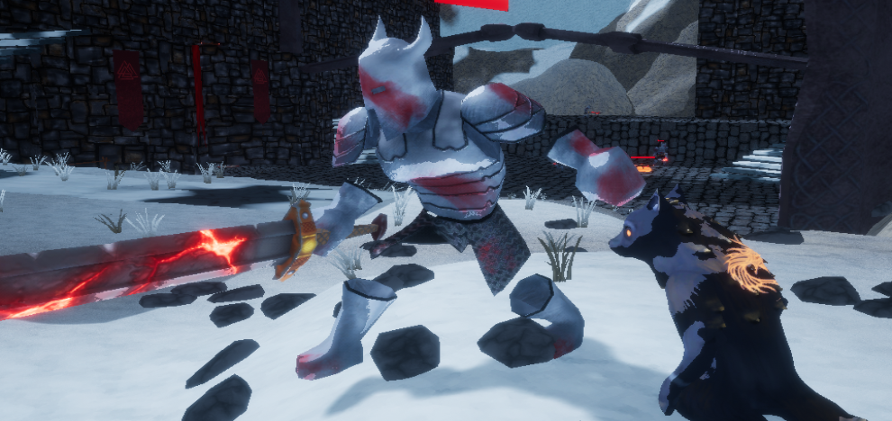
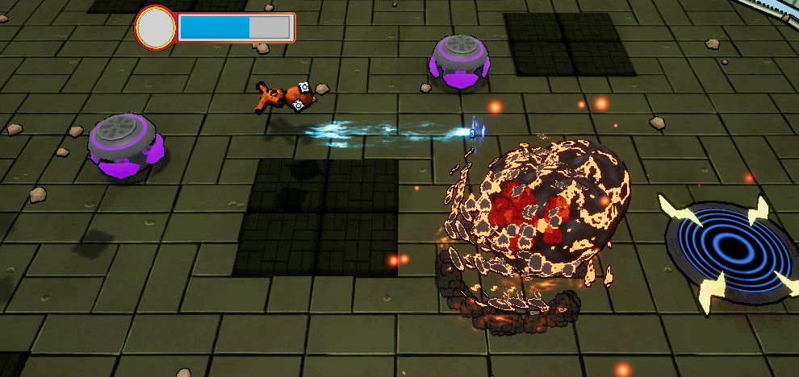
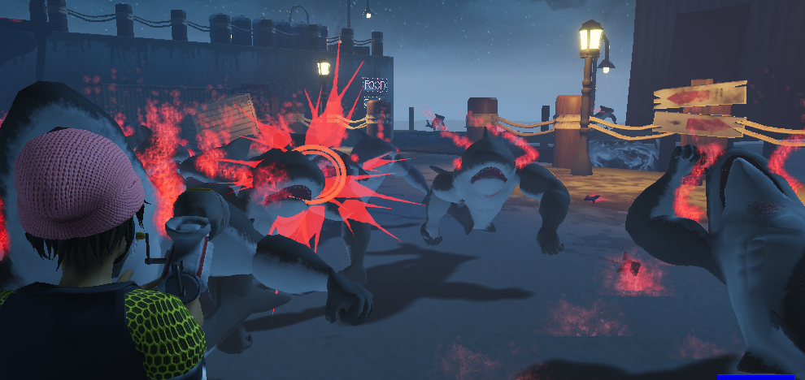

UCF Workshop Projects
Game Design Workshop Spring 2017
Fenrir Unchained

Itch page: Fenrir Unchained Itch page
Role: Co-Creative Director and Tech Lead
About the game: Fenrir Unchained is a puzzle action game in a Nordic setting.. You play as one of Fenrir's two children in order to break him out and incite Ragnarök.
The things that I was responsible for in the game was as follows:
- Main character controller and mechanic programming
- Main Character mesh retopology, texturing, and animations
- Master Material Creation
- Various other programming instances including:
- Buttons being linked to doors
- Enemy and player damage dealt and received
- Triggering ending and beginning cutscenes
- Checkpoints
- Setting up animation blueprints for the enemies and character along with when to transition
- Import of some meshes
- Some particle effects and material animations
- Putting together the levels in engine via level streaming
- Putting together a post process material that makes the world somewhat stylized and flat shaded
- Painting some structures in the levels to be varied and break up monotony of tiling textures. (see Vertex Painting Master Material
- Landscape material creation and application
- Lighting the levels
This was my first workshop game using Unreal Engine 4 with a team of 10 people. It was my first real challenge to figure out how to make a complete game from start to finish. I figured out how to do a lot of things and it was a really good learning experience.
Game Design Workshop Summer 2017
Project Backfire
Itch page: Project Backfire Itch page
Role: Tech Lead
About the game: Project backfire is an action survival game that was all about dodging falling bombs to get the highest score while the difficulty continued to increase.
The things that I was responsible for in the game was as follows:
- Main character controller and mechanic programming
- Master material creation
- Various animated materials
- Programming the rules of the three game modes
- Setting up animation blueprints for the main character and when to transition
- Programming the power ups
- Programming the spawn points of power ups
- Programming various hazards that fall from the sky
- Creation of various particle materials
- Creation of some particle systems and helping to create them
- Programming of particle system spawns in game
- Implementation of a playlist of all tracks that loop seamlessly
- Helping to optimize some parts of continuous tasks
- Lighting the levels
This was my second workshop game also using Unreal Engine 4 with a team of 8. We utilized Unreal's blueprint visual scripting to do all the programming with it. One of the true challenges with this game was the ability to get multiplayer in the game. I used my knowledge from the last game I had a hand in to make sure this game was more focused in on tight gameplay while not making things too difficult with it's balancing.
Game Design Workshop Fall 2017
Red Tide
Itch page: Red Tide Itch Page
Role: Tech Lead
About the game: Red Tide was a third person wave survival game set in a post apocalypse where mutated sea creatures have broken loose. The goal of the game is to survive 5 waves of various mutated sea creatures until you are rescued by a sea plane.
The things that I was responsible for in the game was as follows:
- Main character controller and mechanic programming
- Programming of player damage taken
- Programming of all the player's weapons and all of the weapon's respective bullets
- Programming of enemy spawn points and spawning algorithm
- Programming of the game mode (or the rules of how the game flows. end of enemy waves, determining when the game was over etc.)
- Programming of UI functionality and menus
- Setup of the three enemy type's animation blueprints and when to transition
- Master material creation
- Various animated materials
- Helping to build and design the level
- Creation of various particle systems
- Helping to make other particle systems work more efficiently
- Creation of some props for the level
- Helping set up the pipeline of the creation and export of 3D assets
- Helping to fix any problems in 3D assets
- Import and assigning of material instance for most 3D assets
- Lighting the levels
This was my third and final workshop game also using Unreal Engine 4 with a team of 11. We utilized Unreal's blueprint visual scripting to do all the programming with it. A couple of the smaller goals that I had for this project was to see about making a projectile based shooter instead of using line traces/raycasts, and also to utilize Unreal's deferred decal system to make the level more visually interesting.